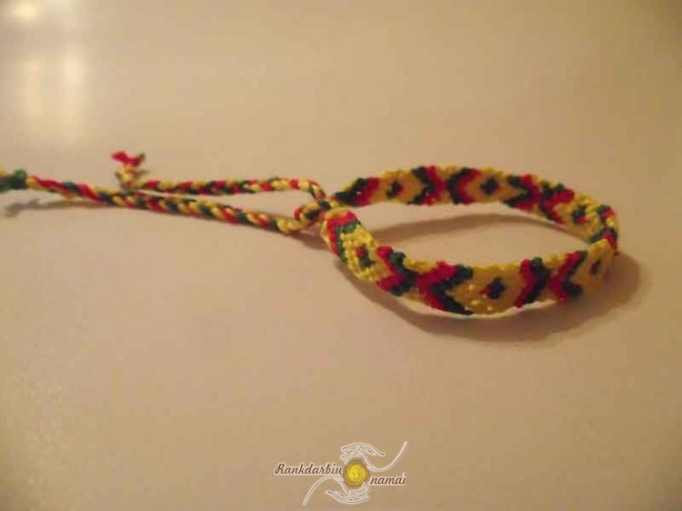

Odinės, sidarinės apyrankės internetu - Papuošalai internetu
 Top nuorodos Prisijungti +370 613 13450 Galima apmokėti atsiimant prekes 30 dienų pinigų grąžinimo garantija Nemokamas pristatymas nuo 20€ 0 prekė prekė(s) 0 tuščiaPrekių nėra
Turi būti nustatyta Pristatymas 0,00 € VisoPirkti
Prekė sėkmingai pridėta į krepšelį Kiekis Viso Krepšelyje yra 0 prekė (-ės). Krepšelyje yra 1 prekė. Prekės viso Viso pristatymas Turi būti nustatyta Viso Tęsti apsipirkimą Pereiti prie apmokėjimo Meniu Auskarai Kaklo papuošalai Pakabukai Grandinėlės Sidabruoti Poroms Kiti Apyrankės Odinės Poroms Sidabruotos Kitos Papuošalų komplektai Poroms Dideli pliušiniai meškinai ApyrankėsApyrankės
Auskarai Kaklo papuošalai Pakabukai Grandinėlės Sidabruoti Poroms Kiti Apyrankės Odinės Poroms Sidabruotos Kitos Sidabro Pakabukai (su grandinėlėmis) Apyrankės Auskarai Grandinėlės Papuošalų komplektai Laikrodžiai Papuošalai poroms Raktų pakabukai poroms Apyrankės poroms Pakabukai poroms Dovanos Valentino dienos proga Pradinės Graviruojami papuošalai Buivolo rago Gintaro papuošalai Dideli pliušiniai meškinaiSpecialūs pasiūlymai papuošalams
25,78 € 16,75 €Sidabruotas kaklo...
43,30 € 36,81 €Odinė apyrankė su...
22,59 € 15,59 €Apyrankė APQ843
13,03 € 11,73 €925 Sidabruota...
14,43 € 11,43 €Sidabruoti auskarai...
Visi pasiūlymaiKategorijos
Partneriai
Apyrankės
Apyrankė - papuošalas nešiojamas ir vyrų ir moterų ir vaikinų ir merginų. Puikiai tinka tiek jauniems, tiek ir vyresniems. Mūsų parduotuvėje rasite itin didelį apyrankių pasirinkimą - nuo pigios virvelių apyrankės iki prabangių odinių ar gydomųjų apyrankių su magnetais ar germaniu. Prekiaujame ir apyrankėmis skirtomis graviravimui. Prireikus sut...
Apyrankė - papuošalas nešiojamas ir vyrų ir moterų ir vaikinų ir merginų. Puikiai tinka tiek jauniems, tiek ir vyresniems. Mūsų parduotuvėje rasite itin didelį apyrankių pasirinkimą - nuo pigios virvelių apyrankės iki prabangių odinių ar gydomųjų apyrankių su magnetais ar germaniu. Prekiaujame ir apyrankėmis skirtomis graviravimui. Prireikus suteiksime ir graviaravimo paslaugą. O jums pristatysime jau išgraviruotą ir kaip dovaną supakuotą apyrankę. Šių metų naujiena - apyrankės poroms. Tai dviejų apyrankių rinkiniai jam ir jai. Tai dovana iškart dviem draugams arba tiesiog antrai Jūsų pusei ir Jums. Apyrankes pristatysime itin greit visoje Lietuvoje. Jei pas mus nerasite norimo papuošalo - kreipkitės ir mes pasistengisme kuo greičiau jį turėti ir savo parduotuvėje. O Jums priitakysime solidžią nuolaidą!
DaugiauSubkategorijos
Odinės
Odinės apyrankės - tai papuošalų rūšis kuri labai seniai buvo madinga ir tokia išliks dar ilgai. Odines apyrankes nešioja tiek vyrai, tiek ir moterys. Jos tinka tiek solidaus ir konstruktyvaus stiliaus žmonėms, tiek ir ekstravagantiškiems šiuolaikiškiems jaunuoliams. Čia rasite tiek natūralios, tiek dirbtinės odos gaminių. Visos apyrankės gražiai supakuojamos ir Jums pristatomos puikios gražiose pakuotėse. Tad jas iškart galite dovanoti ir nepergyventi dėl įpakavimo. Jei mūsų parduotuvėje neradote norimos apyrankės - skambinkite ir pasistengsime kuo greičiau į parduotuvės asortimentą įtraukti Jūsų pageidaujamą gaminį.
Poroms
Apyrankių komplektai poroms. Tai apyrankių rinkiniai dviem partneriams iškart - vaikinui ir merginai. Pasirinkimas išties didelis - odinės, sidabruotos, juvelyrinio plieno. Naujiena - graviravimui skirtos porų apyrankės su magnetais ir germaniu. Taip vienu šūviu nušausite kelis zuikius - ant apyrankių galėsite išgraviruoti norimą tekstą ar paveikslėlį. O magnetai bei germanis teigiamai veiks širdies darbą bei kraujotaką. Mes pasirūpinsime gražiu įpakavimu - tad Jums nereiks sukti galvos net dėl jo.
Sidabruotos
Kitos
Apyrankė - povas
13,61 €Tipas - apyrankė. Apyrankės plotis - 6 cm(reduliuojama).Povo dydis - 6.8x3.7 cm. Papuošalo ID - 61.
Prekyboje Į krepšelį DaugiauMoteriška apyrankė SAP9823
11,30 €Tipas - sidabruota(925) apyrankė. Apyrankės ilgis - 21 cm.Apyrankės plotis - 6 mm. Papuošalo ID - 147.
Išparduota Išparduota DaugiauApyrankė APR198
22,88 €Tipas - vyriška odinė apyrankė su plieno elementais. Apyrankės ilgis - 21 cm. Papuošalo ID - 198.
Išparduota Išparduota DaugiauApyrankė APR205
17,09 €Tipas - apyrankė. Apyrankės storis plačiausioje vietoje - 5.7 cm.Riešo plotis - 7.5 cm. Papuošalo ID - 205.
Prekyboje Į krepšelį DaugiauApyrankė APR214
11,30 €Tipas - apyrankė su odos elementais. Apyrankės ilgis - 17 cm + 5 cm.Apyrankės plotis - 2.5 cm. Papuošalo ID - 214.
Išparduota Išparduota DaugiauApyrankė APR217
14,19 €Apyrankės ilgis - 18 cm + 5 cm.Apyrankės masė - 28 g. Papuošalo ID - 217.
Išparduota Išparduota DaugiauOdinė apyrankė su gėle
8,40 €Apyrankės ilgis - 60 cm - 2.5 cm. Papuošalo ID - 221.
Išparduota Išparduota DaugiauApyrankė Rožių žiedai
17,09 €Tipas - moteriška apyrankė. Apyrankės masė - 36 g. Papuošalo ID - 222.
Išparduota Išparduota DaugiauApyrankė Rožinė svajonė
22,88 €Tipas - moteriška apyrankė. Skersmuo - 78 mm. Papuošalo ID - 225.
Išparduota Išparduota DaugiauApyrankė APR226
17,09 €Tipas - Moteriška apyrankė su tekstilės elementais. Apyrankės ilgis -15 cm + 5 cm.Apyrankės masė - 30.6 g. Papuošalo ID - 226.
Išparduota Išparduota DaugiauApyrankė APR227
17,09 €Tipas - moteriška apyrankė. Apyrankės ilgis - 19 cm + 2 cm.Apyrankės masė - 22.7 g. Papuošalo ID - 227.
Išparduota Išparduota DaugiauApyrankė APR228
17,09 €Tipas - moteriška apyrankė. Apyrankės ilgis - 175 mm. Papuošalo ID - 228.
Išparduota Išparduota DaugiauApyrankė Paryžius
17,09 €Tipas - moteriška apyrankė. Apyrankės ilgis - 17.5 cm. Papuošalo ID - 229.
Išparduota Išparduota DaugiauVyriška apyrankė APR230
28,67 €Tipas - nerūdijančio plieno vyriška grandinėlė. Ilgis - 22 cm.Plotis - 0.6 cm. Papuošalo ID - 230.
Išparduota Išparduota DaugiauJaunatviška apyrankė Žvaigždė
8,40 €Tipas - apyrankė su odos ir medienos elementais. Ilgis - 17 cm. Papuošalo ID - 231.
Išparduota Išparduota DaugiauVyriška apyrankė APR232
17,09 €Tipas - vyriška plieninė apyrankė. Ilgis - 22 cm. Papuošalo ID - 232.
Išparduota Išparduota DaugiauPlieninė vyriška apyrankė APR233
19,98 €Tipas - nerūdijančio plieno vyriška apyrankė. Apyrankės ilgis - 22 cm. Papuošalo ID - 233.
Išparduota Išparduota DaugiauApyrankė APR241
14,19 €Tipas - moteriška apyrankė. Apyrankės dydis - 21x3 cm.Apyrankės masė - 25.5 g. Papuošalo ID - 241.
Išparduota Išparduota DaugiauApyrankė APR243
19,98 €Tipas - apyrankė iš juvelyrinių metalų lydinio su dirbtinės odos elementais. Ilgis - 23 cm.Plotis - 2.8 cm.Masė - 25.5 g. Papuošalo ID - 243.
Prekyboje Į krepšelį DaugiauApyrankė Žvaigždės
17,09 €Tipas - sidabru(925) dengta apyrankė. Apyrankės ilgis - iki 20 cm.Masė - 15 g. Papuošalo ID - 245.
Išparduota Išparduota DaugiauApyrankė Mėlyna pynė
11,30 €Tipas - apyrankė su odos elementais. Apyrankės ilgis - 20-29 cm. Papuošalo ID - 264.
Išparduota Išparduota DaugiauApyrankė Lietuvos trispalvė
12,00 €Tipas - Lietuvos vėliavos spalvų apyrankė su nerūdijančio plieno elementais. Apyrankės ilgis - 21 cm.Apyrankės plotis - 11 mm. Papuošalo ID - 270.
Prekyboje Į krepšelį DaugiauPlieninė vyriška apyrankė APR277
31,57 €Tipas - juvelyrinio plieno apyrankė. Apyrankės ilgis - 208 mm.Apyrankės plotis - 12 mm. Papuošalo ID - 227.
Išparduota Išparduota DaugiauVyriška apyrankė APR278
26,50 €Tipas - juvelyrinio plieno magnetinė apyrankė. Apyrankės ilgis - 220 mm.Apyrankės plotis - 12 mm. Papuošalo ID - 278.
Išparduota Išparduota DaugiauPlieninė vyriška apyrankė su magnetu...
40,26 €Tipas - juvelyrinio plieno apyrankė su magnetais. Apyrankės ilgis - 205 mm.Apyrankės plotis - 12 mm. Papuošalo ID - 279.
Išparduota Išparduota DaugiauApyrankė APR280
22,88 €Tipas - silikoninė apyrankė su plieno elementais. Apyrankės ilgis - 22 cm.Masė - 21 g.Apyrankės storis - 10 mm. Papuošalo ID - 280.
Išparduota Išparduota DaugiauPlieninė apyrankė Naktinis gyvenimas
25,78 €Tipas - silikono ir juvelyrinio plieno apyrankė. Apyrankės ilgis - 19 cm.Apyrankės storis - 8 mm. Papuošalo ID - 281.
Prekyboje Į krepšelį DaugiauApyrankė moterims Raudonis
11,30 €Tipas - apyrankė iš karoliukų. Papuošalo ID - 318.
Išparduota Išparduota DaugiauApyrankė moterims Žaluma
11,30 €Tipas - apyrankė. Apyrankės ilgis - 17 cm + 6 cm.Apyrankės plotis - iki 4 cm. Papuošalo ID - 319.
Prekyboje Į krepšelį DaugiauMoteriška apyrankė Jūra
11,30 €Tipas - apyrankė. Apyrankės ilgis - 17 cm + 4 cm. Papuošalo ID - 320.
Išparduota Išparduota DaugiauApyrankė moterims Karoliukai
11,01 €Tipas - karoliukų apyrankė. Papuošalo ID - 321.
Išparduota Išparduota DaugiauJuoda moteriška apyrankė Vilkas
11,30 €Tipas - moteriška apyrankė, Apyrankės ilgis - 17 cm + 8 cm. Papuošalo ID - 322.
Išparduota Išparduota DaugiauOdinė apyrankė moterims su gėle
8,40 €Tipas - apyrankė su odos ir medienos elementais. Apyrankės ilgis - 17 cm + 3 cm. Papuošalo ID - 323.
Išparduota Išparduota DaugiauApyrankė moterims APR325
14,19 €Tipas - Užmaunama sidabru(925) dengta apyrankė. Apyrankės ilgis - 19 cm.Apyrankės plotis - iki 14 mm. Papuošalo ID - 325.
Išparduota Išparduota DaugiauSpalvota apyrankė APR344
16,80 €Tipas - universali apyrankė su odos ir medžio elementais. Apyrankės ilgis - 19-26 cm. Papuošalo ID - 344.
Išparduota Išparduota DaugiauVerta apyrankė APR345
16,80 €Tipas - universalaus odinė apyrankė. Dydis - 19-26 cm. Papuošalo ID - 345.
Išparduota Išparduota DaugiauJuoda odinė apyrankė APR394
19,00 €Tipas - universali odinė apyrankė. Apyrankės ilgis - 24.5 cm.Apyrankės plotis - 2.2 cm. Papuošalo ID - 394.
Išparduota Išparduota DaugiauApyrankė moterims APR428
12,50 €Tipas - pinta apyrankė. Apyrankės ilgis - 57 cm. Papuošalo ID - 428.
Išparduota Išparduota DaugiauOdinė apyrankė APR429
29,00 €Tipas - universali odinė apyrankė. Apyrankės ilgis - 26 cm.Apyrankės plotis - iki 4 cm.Apyrankės dirželio plotis - 1.6 cm. Papuošalo ID - 429.
Prekyboje Į krepšelį DaugiauApyrankė APR446
31,00 €Tipas - apyrankė dengta sidabru(925). Apyrankės matmenys - 21x1.1 cm. Papuošalo ID - 446.
Išparduota Išparduota DaugiauApyrankė daiktelynas
15,00 €Tipas - apyrankė dengta sidabru(925).Ilgis - 18.5 cm. Papuošalo ID - 448.
Prekyboje Į krepšelį DaugiauApyrankė APR450
17,00 €Tipas - apyrankė.Ilgis - 18 cm + 5 cm.Stikliuko skersmuo - 2.7 cm. Papuošalo ID - 449.
Išparduota Išparduota DaugiauPlieninė vyriška apyrankė APR468
39,50 €Tipas - vyriška plieninė apyrankė.Apyrankės ilgis - 22 cm.Apyrankės storis - 10mm.Papuošalo ID - 468.
Prekyboje Į krepšelį DaugiauVyriška plieninė apyrankė APR469
34,00 €Tipas - juvelyrinio plieno vyriška apyrankė. Apyrankės ilgis - 21.5 cm.Apyrankės plotis - 15 mm. Papuošalo ID - 469.
Išparduota Išparduota DaugiauOdinė apyrankė APR476
23,50 €Tipas - natūralios odos apyrankė su metalo elementais. Apyrankės plotis - 25 mm.Apyrankės ilgis - 21 arba 25 cm. Papuošalo ID - 476.
Išparduota Išparduota DaugiauVyriška apyrankė su magnetu APR496
36,00 €Tipas - juvelyrinio plieno apyrankė vyrams su magnetais. Apyrankės ilgis - 21 cm.Apyrankės plotis - 12 mm. Papuošalo ID - 496.
Išparduota Išparduota DaugiauJuoda moteriška apyrankė APR497
17,09 €Tipas - moteriška apyrankė su tekstilės elementais. Apyrankės ilgis - 15 cm + 5 cm. Papuošalo ID - 497.
Prekyboje Į krepšelį DaugiauRožinė moteriška apyrankė APR498
17,09 €Tipas - moteriška apyrankė su tekstilės elementais. Apyrankės ilgis - 15 cm + 5 cm. Papuošalo ID - 498.
Išparduota Išparduota Daugiau 1 2 3 Rodoma 1 - 48 iš 135 dalykų Facebook Twitter RSS ‹ ›Ačiū, kad padėjote išsisukti iš keblios padėties. Gimtadienis išgelbėtas!
Asta, Kaunas
Ačiū už greitą pristatymą, gražų įpakavimą ir dovanėlę! Būtinai sugrįšiu.
Irma, Marijampolė
Ačiū už profesionalią ir nesavanaudišką konsultaciją. Likome tikrai labai patenkinti.
Eglė, Marijampolė
Dėkinga už operatyvumą! Prekes gavau nepraėjus pilnai parai.
Monika
Informacija
Pristatymas Prekių grąžinimas Kontaktai Dovanos papuošalų pirkėjams Asmens duomenų apsaugaPapuošalų pristatymas
Lietuvos paštas: 2-4 darbo dienis
LpExpress kurjeris: 1-2 darbo dienos
Omniva paštomatas: 1-2 darbo dienos
LpExpress paštomatas: 1-2 darbo dienos
Autobusų siuntų skyrius: tą pačią dieną arba kitą rytą
Apmokėjimo būdai
Bankinis pavedimas Grynieji atsiėmimo metu Apmokėjimas Maxima kasose Apmokėjimas Lietuvos spaudos kioskuose Apmokėjimas Olifėjos terminaluose
Susisiekite su mumis
Telefonas:+370 613 13450
Informacija:Manto Klimavičiaus individuali veikla
El. paštas: info@papuosalurojus.lt Copyright 2016 © PapuosaluRojus.LT - Visos teisės saugomos.